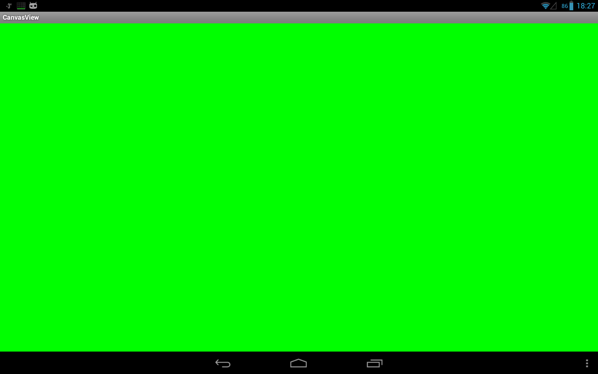

В этом уроке:
- - получаем доступ к Canvas
Наконец-то начинаем цикл уроков по графике в Android. Не прошло и двух с половиной лет с момента создания сайта.
Для начала рассмотрим обычное 2D рисование.
Для рисования используется объект Canvas. Сразу договоримся, что я буду называть его «канва». Тем более, что в русском языке даже есть такое слово, известное в узких кругах вышивающих крестиком. Можно еще, конечно, Canvas перевести как «холст» или «полотно», но как-то пафосно получается. «Канва» - проще и удобнее для меня.
В этом уроке разберем два способа получения доступа к канве.
Первый способ – через наследника View класса. Нам нужно просто переопределить его метод onDraw и он даст нам доступ к канве. Кода тут минимум и все предельно просто. Но есть недостаток – все рисование выполняется в основном потоке. Это прокатит, если у вас статичная картинка или не слишком динамичная анимация.
Второй способ – через SurfaceView. Этот способ подойдет, если планируете рисовать что-то тяжелое и динамичное. Под рисование здесь будет выделен отдельный поток. Это уже немного посложнее в реализации, чем первый способ.
Создадим проект:
Project name: P1411_CanvasView
Build Target: Android 4.0
Application name: CanvasView
Package name: ru.startandroid.develop.p1411canvasview
Код MainActivity.java:
package ru.startandroid.develop.p1411canvasview;
import android.app.Activity;
import android.content.Context;
import android.graphics.Canvas;
import android.graphics.Color;
import android.os.Bundle;
import android.view.View;
public class MainActivity extends Activity {
@Override
protected void onCreate(Bundle savedInstanceState) {
super.onCreate(savedInstanceState);
setContentView(new DrawView(this));
}
class DrawView extends View {
public DrawView(Context context) {
super(context);
}
@Override
protected void onDraw(Canvas canvas) {
canvas.drawColor(Color.GREEN);
}
}
}Кнопка и фрагмент-карта
В onCreate мы в метод setContentView передаем не layout-файл, как обычно, а свой view-компонент DrawView. Он будет занимать все содержимое Activity.
Класс DrawView является наследником View и переопределяет его метод onDraw. А этот метод дает нам доступ к объекту Canvas. Пока что не будем рисовать ничего особенного, а просто закрасим все зеленым цветом с помощью метода drawColor.
Собственно, все. Готово первое приложение, которое что-то рисует на экране.
Все сохраняем, запускаем и видим результат.
Экран зеленый, как мы и просили.
Метод onDraw был вызван системой, когда возникла необходимость прорисовать View-компонент на экране. Это также произойдет, например, если выключить-включить экран. Попробуйте поставить в onDraw лог и посмотреть результат.
Если вам надо, чтобы на канве была какая-то анимация, необходимо самим постоянно вызывать перерисовку экрана, когда ваши изменения готовы к отображению. Для этого используется метод invalidate. Вызываете его и он в свою очередь вызовет onDraw. Также есть реализации метода invalidate, которые позволяет перерисовать не весь компонент, а только его часть, указав координаты.
Если нужна цикличная прорисовка, можно поместить метод invalidate прямо в onDraw и View будет постоянно перерисовываться. В некоторых уроках, думаю, будем так делать, но только для упрощения кода. А в действительности это не очень хорошая практика, т.к. это все будет идти в основном потоке. И правильнее будет реализовать такую постоянную перерисовку через SurfaceView.
Давайте посмотрим как это делается.
SurfaceView
Перепишем MainActivity.java:
package ru.startandroid.develop.p1411canvasview;
import android.app.Activity;
import android.content.Context;
import android.graphics.Canvas;
import android.graphics.Color;
import android.os.Bundle;
import android.view.SurfaceHolder;
import android.view.SurfaceView;
public class MainActivity extends Activity {
@Override
protected void onCreate(Bundle savedInstanceState) {
super.onCreate(savedInstanceState);
setContentView(new DrawView(this));
}
class DrawView extends SurfaceView implements SurfaceHolder.Callback {
private DrawThread drawThread;
public DrawView(Context context) {
super(context);
getHolder().addCallback(this);
}
@Override
public void surfaceChanged(SurfaceHolder holder, int format, int width,
int height) {
}
@Override
public void surfaceCreated(SurfaceHolder holder) {
drawThread = new DrawThread(getHolder());
drawThread.setRunning(true);
drawThread.start();
}
@Override
public void surfaceDestroyed(SurfaceHolder holder) {
boolean retry = true;
drawThread.setRunning(false);
while (retry) {
try {
drawThread.join();
retry = false;
} catch (InterruptedException e) {
}
}
}
class DrawThread extends Thread {
private boolean running = false;
private SurfaceHolder surfaceHolder;
public DrawThread(SurfaceHolder surfaceHolder) {
this.surfaceHolder = surfaceHolder;
}
public void setRunning(boolean running) {
this.running = running;
}
@Override
public void run() {
Canvas canvas;
while (running) {
canvas = null;
try {
canvas = surfaceHolder.lockCanvas(null);
if (canvas == null)
continue;
canvas.drawColor(Color.GREEN);
} finally {
if (canvas != null) {
surfaceHolder.unlockCanvasAndPost(canvas);
}
}
}
}
}
}
}Стало чуть сложнее, правда? ) Сейчас разберемся что к чему.
Метод onCreate, собственно, ничуть не изменился. Мы также в метод setContentView передаем наш объект DrawView.
Смотрим DrawView. Он является наследником SurfaceView и заодно реализует интерфейс обработчика SurfaceHolder.Callback. Напоминаю, что с SurfaceView мы уже работали в уроке про камеру (Урок 132). Этот компонент только отображает контент. А работа с ним ведется через обработчика SurfaceHolder.
В конструкторе DrawView мы получаем SurfaceHolder и сообщаем ему, что сами будем обрабатывать его события. Таких событий три:
surfaceChanged - был изменен формат или размер SurfaceView
surfaceCreated – SurfaceView создан и готов к отображению информации
surfaceDestroyed – вызывается перед тем, как SurfaceView будет уничтожен
В surfaceCreated мы создаем свой поток прорисовки (о нем чуть позже), передаем ему SurfaceHolder. Вызовом метода setRunning(true) ставим ему метку о том, что он может работать и стартуем его.
В surfaceDestroyed мы своему потоку сообщаем (setRunning(false)) о том, что его работа должна быть прекращена, т.к. SurfaceView сейчас будет уничтожено. Далее запускаем цикл, который ждет, пока не завершит работу наш поток прорисовки. Дождаться надо обязательно, иначе поток может попытаться нарисовать что-либо на уничтоженном SurfaceView.
DrawThread, наследник Thread, – это наш поток прорисовки. В нем и будет происходить рисование.
В конструктор передаем SurfaceHolder. Он нам нужен, чтобы добраться до канвы.
Метод setRunning ставит метку работы, сообщающую потоку, можно ли работать.
Метод run. В нем видим цикл, который выполняется пока позволяет метка работы (running). В цикле обнуляем переменную канвы, затем от SurfaceHolder получаем канву методом lockCanvas. На всякий случай проверяем, что канва не null, и можно рисовать: снова просто закрашиваем все зеленым цветом. После того, как нарисовали, что хотели, мы возвращаем канву объекту SurfaceHolder методом unlockCanvasAndPost в секции finally (обязательной для выполнения) и SurfaceView отобразит наши художества.
Соответственно, когда в surfaceDestroyed вызывается метод setRunning(false), происходит выход из цикла в методе run и поток завершает свою работу.
Все сохраняем, запускаем и видим результат.

Экран зеленый.
Когда мы рассматривали первый способ получения канвы (через onDraw), я упомянул, что надо самим вызывать invalidate, если нужна постоянная перерисовка. Во втором способе ничего такого делать уже не надо. У нас итак идет постоянная перерисовка в цикле.
На этом вводный урок закончим. Мы рассмотрели два способа получения канвы. В последующих уроках я буду использовать первый способ, т.к. он проще, кода в нем значительно меньше и можно будет сосредоточиться непосредственно на работе с канвой и рисовании.
На этом вводный урок закончим. Мы рассмотрели два способа получения канвы. В последующих уроках я буду использовать первый способ, т.к. он проще, кода в нем значительно меньше и можно будет сосредоточиться непосредственно на работе с канвой и рисовании.